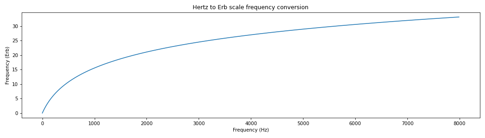
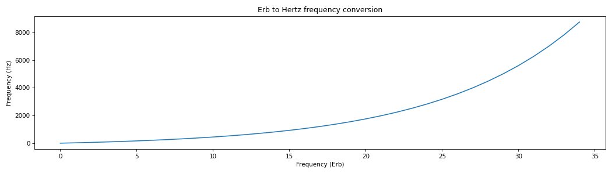
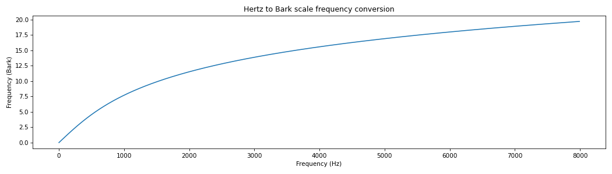
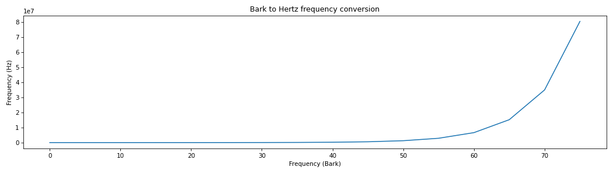
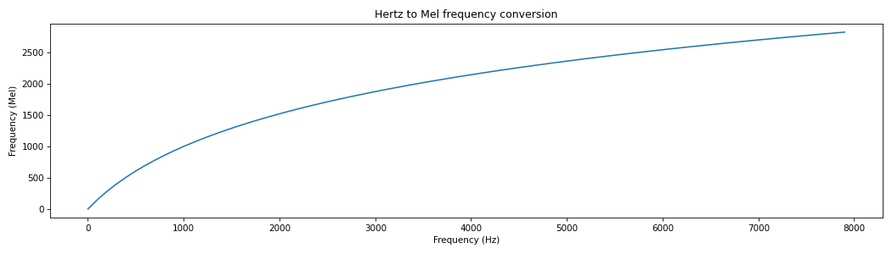
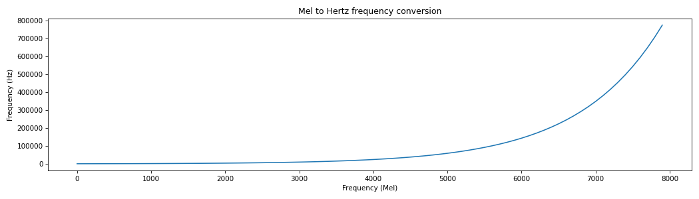

spafe.utils.converters#
Description : Frequency converters implementation.
Copyright (c) 2019-2023 Ayoub Malek. This source code is licensed under the terms of the BSD 3-Clause License. For a copy, see <https://github.com/SuperKogito/spafe/blob/master/LICENSE>.
- spafe.utils.converters.hz2erb(f: float, approach: Literal['Glasberg'] = 'Glasberg') float[source]#
Convert Hz frequencies to Erb as referenced in [Glasberg].
- Parameters
- Returns
frequency in Erb [Erb].
- Return type
(float)
Note
- Glasberg (1990) :
\(fe = A . log_{10}(1 + f . 0.00437)\)
\(f = \frac{10^{\frac{fe}{A}} - 1}{0.00437}\)
where \(A = \frac{1000 . log_{e}(10)}{24.7 . 4.37}\)
! might raise: RuntimeWarning: invalid value encountered in log10
References
- Glasberg(1,2)
: Glasberg B. R., and Moore B. C. J. “Derivation of Auditory Filter Shapes from Notched-Noise Data.” Hearing Research. Vol. 47, Issues 1–2, 1990, pp. 103–138.
Examples
import matplotlib.pyplot as plt from spafe.utils.converters import hz2erb # generate freqs array -> convert freqs hz_freqs = [freq for freq in range(0, 8000, 10)] erb_freqs = [hz2erb(freq) for freq in hz_freqs] # visualize conversion plt.figure(figsize=(14,4)) plt.plot(hz_freqs, erb_freqs) plt.xlabel("Frequency (Hz)") plt.ylabel("Frequency (Erb)") plt.title("Hertz to Erb scale frequency conversion") plt.tight_layout() plt.show()

- spafe.utils.converters.erb2hz(fe: float, approach: Literal['Glasberg'] = 'Glasberg') float[source]#
Convert Erb frequencies to Hz as referenced in [Glasberg].
- Parameters
- Returns
frequency in Hz [Hz].
- Return type
(float)
Note
- Glasberg (1990) :
\(fe = A . log_{10}(1 + f . 0.00437)\)
\(f = \frac{10^{\frac{fe}{A}} - 1}{0.00437}\)
where \(A = \frac{1000 . log_{e}(10)}{24.7 . 4.37}\)
! might raise: RuntimeWarning: invalid value encountered in log10
Examples
import matplotlib.pyplot as plt from spafe.utils.converters import erb2hz # generate freqs array -> convert freqs erb_freqs = [freq for freq in range(0, 35, 1)] hz_freqs = [erb2hz(freq) for freq in erb_freqs] # visualize conversion plt.figure(figsize=(14,4)) plt.plot(erb_freqs, hz_freqs) plt.xlabel("Frequency (Erb)") plt.ylabel("Frequency (Hz)") plt.title("Erb to Hertz frequency conversion") plt.tight_layout() plt.show()

- spafe.utils.converters.hz2bark(f: float, approach: Literal['Wang', 'Tjomov', 'Schroeder', 'Terhardt', 'Zwicker', 'Traunmueller'] = 'Wang') float[source]#
Convert Hz frequencies to Bark as mentioned in [Carter] and [Traunmueller].
- Parameters
- Returns
frequency in Bark [Bark].
- Return type
(float)
Note
- Tjomov (1971) :
\(fb = 6.7 . sinh^{-1}(\frac{f+20}{600})\)
\(f = 600 . sinh(\frac{fb}{6.7}) - 20\)
- Schroeder (1977) :
\(fb = 7 . sinh^{-1}(\frac{f}{650})\)
\(f = 650 . sinh(\frac{fb}{7})\)
- Terhardt (1979) :
\(fb = 13.3*tan^{-1}(\frac{0.75 . f}{1000})\)
\(f = (1000/0.75)*tan(\frac{fb}{13})\)
- Zwicker & Terhardt (1980) :
\(fb = 8.7 + 14.2 . log10(\frac{f}{1000})\)
\(f = 10^{(\frac{fb-8.7}{14.2} + 3)}\)
- Traunmueller (1983) :
\(fb = (\frac{26.81*f}{1+1960}) - 0.53\)
\(f = 1960 . (\frac{fb+0.53}{26.28-fb})\)
- Wang, Sekey & Gersho (1992) :
\(fb = 6 . sinh^{-1}(\frac{f}{600})\)
\(f = 600 . sinh(\frac{fb}{6})\)
Examples
import matplotlib.pyplot as plt from spafe.utils.converters import hz2bark # generate freqs array -> convert freqs hz_freqs = [freq for freq in range(0, 8000, 10)] bark_freqs = [hz2bark(freq) for freq in hz_freqs] # visualize conversion plt.figure(figsize=(14,4)) plt.plot(hz_freqs, bark_freqs) plt.xlabel("Frequency (Hz)") plt.ylabel("Frequency (Bark)") plt.title("Hertz to Bark scale frequency conversion") plt.tight_layout() plt.show()

- spafe.utils.converters.bark2hz(fb: float, approach: Literal['Wang', 'Tjomov', 'Schroeder', 'Terhardt', 'Zwicker', 'Traunmueller'] = 'Wang') float[source]#
Convert Bark frequencies to Hz as mentioned in [Carter] and [Traunmueller].
- Parameters
- Returns
frequency in Hz [Hz].
- Return type
(float)
Note
- Tjomov (1971) :
\(fb = 6.7 . sinh^{-1}(\frac{f+20}{600})\)
\(f = 600 . sinh(\frac{fb}{6.7}) - 20\)
- Schroeder (1977) :
\(fb = 7 . sinh^{-1}(\frac{f}{650})\)
\(f = 650 . sinh(\frac{fb}{7})\)
- Terhardt (1979) :
\(fb = 13.3*tan^{-1}(\frac{0.75 . f}{1000})\)
\(f = (1000/0.75)*tan(\frac{fb}{13})\)
- Zwicker & Terhardt (1980) :
\(fb = 8.7 + 14.2 . log10(\frac{f}{1000})\)
\(f = 10^{(\frac{fb-8.7}{14.2} + 3)}\)
! might raise RuntimeWarning: divide by zero encountered in log10
- Traunmueller (1983) :
\(fb = (\frac{26.81*f}{1+1960}) - 0.53\)
\(f = 1960 . (\frac{fb+0.53}{26.28-fb})\)
- Wang, Sekey & Gersho (1992) :
\(fb = 6 . sinh^{-1}(\frac{f}{600})\)
\(f = 600 . sinh(\frac{fb}{6})\)
References
- Carter(1,2)
Carter, P., “Sonification seminar – 10/9/03”, CCRMA.Stanford.edu., https://ccrma.stanford.edu/courses/120-fall-2003/lecture-5.html
- Traunmueller(1,2)
Traunmueller, H. (1990). Analytical expressions for the tonotopic sensory scale. The Journal of the Acoustical Society of America, 88(1), 97–100. doi:10.1121/1.399849
Examples
import matplotlib.pyplot as plt from spafe.utils.converters import bark2hz # generate freqs array -> convert freqs bark_freqs = [freq for freq in range(0, 80, 5)] hz_freqs = [bark2hz(freq) for freq in bark_freqs] # visualize conversion plt.figure(figsize=(14,4)) plt.plot(bark_freqs, hz_freqs) plt.xlabel("Frequency (Bark)") plt.ylabel("Frequency (Hz)") plt.title("Bark to Hertz frequency conversion") plt.tight_layout() plt.show()

- spafe.utils.converters.hz2mel(f: float, approach: Literal['Oshaghnessy', 'Lindsay'] = 'Oshaghnessy') float[source]#
Convert a value in Hertz to Mels [Oshaghnessy], [Beranek] and [Lindsay].
- Parameters
- Returns
frequency in Mel scale [Mel].
- Return type
(float)
Note
- Oshaghnessy (1987) :
\(fm = 2595 . log_{10}(1 + \frac{f}{700})\)
\(f = 700 . (10^{(\frac{fm}{2595} - 1)}\)
- Beranek (1987) :
\(fm = 1127 . log_{e}(1 + \frac{f}{700})\)
\(f = 700 . exp(\frac{fm}{1127} - 1)\)
Both previous equations correspond to each other.
- Lindsay (1977) :
\(fm = 2410 . log_{10}(1 + \frac{f}{625})\)
\(f = 625 . (10^{(\frac{fm}{2410} - 1)}\)
References
- Oshaghnessy
: O’Shaghnessy, Douglas. Speech Communication: Human and Machine. Reading, MA: Addison-Wesley Publishing Company, 1987.
- Beranek
: Beranek L.L. Acoustic Measurements, (1949) New York: Wiley.
- Lindsay
: Lindsay, Peter H.; & Norman, Donald A. (1977). Human information processing: An introduction to psychology (2nd ed.). New York: Academic Press.
Examples
import matplotlib.pyplot as plt from spafe.utils.converters import hz2mel # generate freqs array -> convert freqs hz_freqs = [freq for freq in range(0, 8000, 100)] mel_freqs = [hz2mel(freq) for freq in hz_freqs] # visualize conversion plt.figure(figsize=(14,4)) plt.plot(hz_freqs, mel_freqs) plt.xlabel("Frequency (Hz)") plt.ylabel("Frequency (Mel)") plt.title("Hertz to Mel frequency conversion") plt.tight_layout() plt.show()

- spafe.utils.converters.mel2hz(fm: float, approach: Literal['Oshaghnessy', 'Lindsay'] = 'Oshaghnessy') float[source]#
Convert a value in Mels to Hertz
- Parameters
- Returns
frequency in Hz [Hz].
- Return type
(float)
Examples
import matplotlib.pyplot as plt from spafe.utils.converters import mel2hz # generate freqs array -> convert freqs mel_freqs = [freq for freq in range(0, 8000, 100)] hz_freqs = [mel2hz(freq) for freq in mel_freqs] # visualize conversion plt.figure(figsize=(14,4)) plt.plot(mel_freqs, hz_freqs) plt.xlabel("Frequency (Mel)") plt.ylabel("Frequency (Hz)") plt.title("Mel to Hertz frequency conversion") plt.tight_layout() plt.show()
